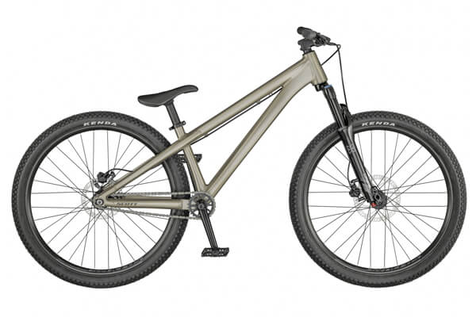
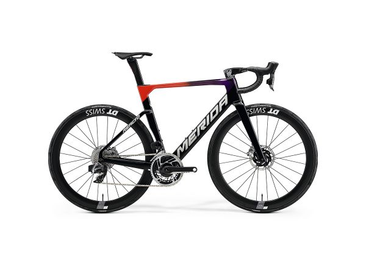
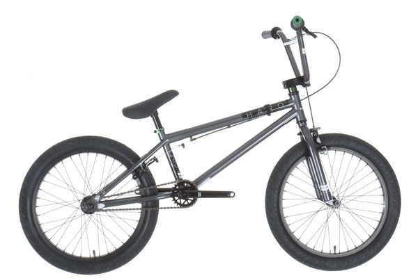

Bicicletas Mtb
A finales de 1970 y principios de 1980, los cuadros de «bicicleta playera» fueron la base para la bicicleta de montaña de reciente desarrollo.1 A mediados de los 70, un grupo de entusiastas en el Condado de Marin, California, comenzaron a competir con las bicis por los cortafuegos del monte Tamalpais en descenso. Una carrera que ellos llamaban «repack», debido a que dicho viaje era tan agotador que los ciclistas debían reempacar sus frenos de contrapedal con grasa después de cada carrera. El terreno cuesta abajo era rocoso y la escarpada montaña ayudó a los corredores a alcanzar altas velocidades, donde saltaban y se estrellaban contra las rocas y el barro. Estos malos tratos causaban roturas en las bicicletas de carreras, por lo que los corredores buscaron una alternativa más duradera y económica. Pronto descubrieron las viejas carcachas (las cuales ellos llamaban Klunker), con neumáticos balón 26 x 2.125 que se podían obtener por 5 dólares en una venta de garaje y podían soportar tremendos castigos. Los ciclistas fueron separando estas reliquias, deshaciéndose del pesado guardabarros y de los adornos, al igual que adaptando frenos de la motocicleta y otros artilugios para mejorar el rendimiento. Un ciclista, Gary Fisher, agregó cambios de marchas en su vieja bicicleta Schwinn Excelsior, la cual le permitía viajar hasta la montaña, así como bajarla. Casi al mismo tiempo, otro corredor, Joe Breeze, comenzó a juguetear con su propia Schwinn Excelsior, adaptándola más al trayecto repack. Cabe mencionar que pronto, ambos comenzaron a construir y vender bicicletas personalizadas de montaña a otros entusiastas; el lanzamiento de un fenómeno en todo el mundo de la bicicleta.
Bicicletas Ruta
El ciclismo en ruta o ciclismo en carretera es una modalidad de ciclismo de competición que consiste en competir en carretera, a diferencia del ciclismo en pista que queda reducido al óvalo del velódromo u otras modalidades que no se disputan sobre asfalto. El ciclismo en ruta es un deporte muy exigente y no debe ser confundido con el cicloturismo, a pesar de que en él también se pueda dar cierto nivel de exigencia competitiva, pero se presupone que hay que ser totalmente autónomo sin asistencias al contrario que en el Ciclismo en Ruta que está todo mucho más controlado. Ciclismo en ruta El ciclismo en ruta suele tener lugar a partir de la primavera hasta el otoño en el hemisferio norte. Muchos ciclistas del hemisferio norte pasan el invierno en países como Australia y Argentina para competir o entrenar. La gama de carreras profesionales de la Unión Ciclista Internacional van desde las de tres semanas llamadas "Grandes Vueltas" (Tour de Francia, Giro de Italia y Vuelta a España) a las clásicas de un día. Sin embargo, el ciclismo en ruta también se da a modo aficionado (amateur) o amistoso de exhibición mediante diferentes pruebas como pueden ser los critérium.
Bicicletas Bmx
El BMX (abreviación de su nombre en inglés: "Bicycle Motocross") es una disciplina del ciclismo que se practica con bicicletas cross con ruedas de 20 pulgadas de diámetro. El BMX abarca dos modalidades: carrera, cuyo objetivo es completar el recorrido en el menor tiempo posible, y estilo libre (freestyle), cuyo objetivo es realizar acrobacias. El BMX es un deporte extremo que debe ser practicado con la debida seguridad que brindan los siguientes objetos: casco, rodilleras, coderas, guantes de tela o plástico y zapatos anchos. La bicicleta tiene que estar en buenas condiciones para evitar accidentes. BMX es la abreviación de Bicycle Motocross, una modalidad nacida en California (Estados Unidos) en 1969, cuando un joven de nombre Scott Breithaupt decide utilizar una bicicleta en una pista de motocross, para imitar las habilidades de sus ídolos de este deporte. Un fabricante de bicicletas llamado Martin Lenox, alertado por la alta demanda de los jóvenes y observando sus gustos, comenzó a fabricar bicicletas similares a motos.